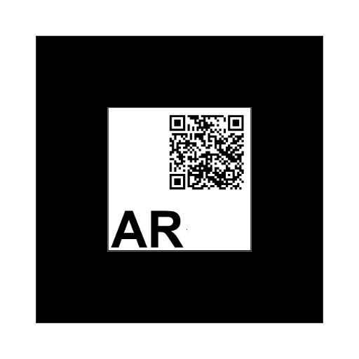

Eine kleine Liste meiner Web-AR-Projekte
| Projekt | Link | Marker | Bemerkungen |
|---|---|---|---|
| Ethan | Ethan |  | Das 3d-Modell von Ethan stammt von https://www.thingiverse.com/thing:873877 |
| Karte / Nordamerika | Nordamerika | Das Bils stammt von den Beispielen von Stemkoski [https://stemkoski.github.io/AR.js-examples/index.html] |